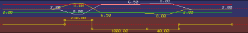
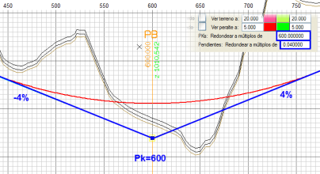

GENEL KIRMIZI KOT SEÇENEKLERİ
|
(+) Konkav düşey kurp,
(-) Konveks düşey kurp |
Boykesitteki eksen noktaları ve aplikasyon noktaları listeleri için işaret kuralını belirler. Varsayılan olarak, konkav düşey kurplar pozitif ve konveks olanlar negatiftir. Bu kutucuk devre dışı bırakılırsa, kural tersine döner.
|
| Grid |
Yakalama referansı olarak kullanılabilecek KM, Z gridini etkinleştirmeyi/devre dışı bırakmayı sağlar.
|
| Grid yoğunluğu |
İki grid modu arasında geçiş yapmayı sağlar; biri diğerinden daha yoğundur. Yakınlaştırma seviyesine bağlı olarak, eşit aralıklı gridin görüntülenmesi otomatik olarak uyum sağlar, büyük ölçeklerde metre başına çizgiler gösterir ve 1:1'e yakın ölçeklerde santimetre ve milimetre seviyesine kadar iner.
|
Grid rengi
|
İki grid renk seti arasında geçiş yapmayı sağlar. Varsayılan modda paletin 52 ve 53 numaralı renklerini kullanır, bu nedenle kullanıcı bunları değiştirebilir.
|
Deverler
Dönme Ekseni
|
Yatay güzergah ekseninin aliyman diyagramının hemen altındaki dever diyagramının çizimini ayarlar veya kaldırır. Dönme ekseni seçeneği de aynı şekilde davranır.


|
Eğer dönme eksenleri eksen boyunca konum değiştirmiyorsa (varsayılan durum), gösterilmezler. Yukarıdaki çizimde bir otoyolun sol ve sağ platformlarına ait olanlar gösterilmektedir.
|
|
Uzun/Kısa
|
Plan diyagramının özel noktalarını kırmızı kot üzerine uzatır. Kırmızı kot tasarımı için grafiksel bir yardım görevi görür. Plandaki özel noktaların uzun referansı etkinleştirildiğinde, bu noktaların KM'lerine bir yakalama modu otomatik olarak etkinleştirilir.
|
Çakışmaları görmek için tolerans
|
Programın düşey kurplar arasındaki çakışmaların varlığını göstermek için kullandığı toleransı değiştirmeyi sağlar. Negatif değerler kabul edilir, varsayılan değer 0.002 m'dir.
|
Yapılar
|
YAPILAR menüsünde tanımlanan yapıları, menfezleri ve geçiş dolgularını KIRMIZI KOT ekranında görüntülemeyi sağlar. Eğer menfez tipi, boykesit çizimi için bir sembol tanımlamışsa, burada gösterim için aynı sembol kullanılacaktır.
|
İsim
|
Yapıların ve menfezlerin adlarının görüntülenmesini etkinleştirmeyi/devre dışı bırakmayı sağlar.
|
| dL | Kesmeyen eksenlerde temsil edebilmek için menfezleri uzatan uzunluk. Giriş veya çıkış ağzı başka bir Menfezle bağlantılıysa, uzatılmazlar. |
Diğer yüzeyler
|
Eğer arazi enkesitleri birden fazla yüzey içeriyorsa, bu yüzeylerin boykesiti görünecektir (RAM'deki Enkesitler seçeneğinin Yapılandırma → Tercihler → Seçenekler → Doğrusal Yapı → RAM'de Hesaplamalar içinde etkin kalması gerekir).
|
Bilgi Panoları
|
Bilgi panolarının görüntülenmesini devre dışı bırakır, bu seçenek çok fazla alfanümerik bilgi biriktiğinde (özellikle uzun eksenlerde ve büyük ölçekte) kullanışlıdır.
|
Birleşimsiz someler
|
Birleşimsiz somelerde, KM, Z, giriş eğimi ve çıkış eğimi gibi bilgileri içeren küçük bir bilgi panosunu etkinleştirme veya devre dışı bırakma imkanı sunar.
|
Yüksek ve alçak noktalar
|
Düşey kurplarla tasarlanmış olsun ya da olmasın, bir kırmızı kotun yüksek ve alçak noktalarını görüntülemeyi sağlar.
|
Makaslar
|
Bu kutucuk etkinleştirilirse, mevcut eksen üzerine yerleştirilen makaslar kırmızı kot üzerinde gösterilir.
|
Nokta tablosu
|
Nokta tablolarının bu menüden grafiksel olarak görüntülenmesini etkinleştirme veya devre dışı bırakma imkanı sunar. Üç küçük bayrak, sırasıyla İsim, Arazi ile kırmızı kot farkı ve Kırmızı kot ile kırmızı kot farkını gizlemek isteyip istemediğimizi yapılandırmamızı sağlar.
|
Metin tablosu
|
Metin tablolarının bu menüden grafiksel olarak görüntülenmesini etkinleştirme veya devre dışı bırakma imkanı sunar.
|
Yönetmeliği Kontrol Et
|
Eksene atanan .dia tablosuna göre her hesaplamada bir talimat kontrolü yapar.
|
Diğer Eksenleri Kontrol Et
|
Bu seçenek etkinleştirildiğinde, program mevcut eksende temsil edilen Diğer Eksenlerin .vol dosyalarında değişiklik olup olmadığını kontrol eder ve olumluysa yeniden oluşturulmasına izin verir.
|
Sondaj verilerini çiz
|
Hesap Bölgeleri iletişim kutusunda veya duruma göre Bağımsız Sondajlar'da tanımlanan diğer yüzeyleri arazinin altında görüntülemeyi sağlar.
|
dZ
|
Mevcut kırmızı kot ile aşağıdaki elemanlardan biri arasındaki kot farkını ekranda etiketler:
- Sağ veya sol platformun kırmızı kotu
- Sağ veya sol hendeğin kırmızı kotu
- Orta refüjün kırmızı kotu
- Yardımcı kırmızı kot
- Sağ veya sol kafa hendeğinin kırmızı kotu
- Arazi
- Diğer boykesit (6 adede kadar boykesite izin verilir)
|
Diğer eksenlerin adı
|
Diğer Eksenlerin adlarını görüntülemeyi sağlar.
|
DD. Eğimler o/oo
|
Etkinleştirilirse, rasa.res kırmızı kot durumundaki eğim, demiryolu güzergah projelerinde alışıldığı gibi binde (‰) olarak gösterilir.
|
Dirsekler. Minimum açı
|
Boru hattı projelerinde, yatay güzergahta bildirilen dirseklerin, açıları bu seçeneklerde belirtilen minimum açıya eşit veya daha büyük olduğunda sarı bir daire ile gösterilmesini sağlar.
Ayrıca etiketlenen 3D açıyı dikkate alarak dirsekler çizilir.
|
rasa.res: Kırmızı kot durumu
|
Listedeki kırmızı kot durumunu gösterir.
Düşey kurp özgül hızı kutucuğu etkinleştirilerek, kırmızı kot durumunda her düşey kurp için bir özgül hız listelenebilir.
Istram, bu değeri tasarım tablolarından (.dia) hesaplar, düşey kurp parametresi KV değerini T0 tablosundaki izin verilen veya istenen değerlerin sütunlarıyla karşılaştırarak, karşılık gelen tasarım hızını bulur.
Kırmızı kot ve düşey kurp 3D Uzunluğu: rasa.res listelerine, kırmızı kotun ve düşey kurbun gerçek (3D) uzunluğunu içeren iki ek sütun ekleme imkanı.
|
rasa.res: boykesitteki eksen noktaları
|
Burada programa, kırmızı kot listelerinde hangi verilerin görüneceği belirtilir. Bu değerler tüm eksenler için uygulanır ve programın yapılandırma dosyalarında saklanır/geri yüklenir.
Listede görünmesini istediğimiz boykesitteki eksen noktaları bölümünü seçebiliriz:
- Yüksek ve alçak noktalar.
|
rasa.res: Giriş verileri
|
KM1, Z1, KM2, Z2, Eğim (%) gibi gerçekleştirme verilerinin eklendiği kırmızı kot listesini elde etmeyi sağlar.
|
Kırmızı kotları yüklerken Geçiş Noktalarını kaldır
|
Bu kutucuğu etkinleştirirsem, program bir .ras veya bir .vol dosyası aracılığıyla başka bir kırmızı kot yüklediğimde mevcut olan geçiş noktalarını kaldıracaktır.
|
Boykesit ve platform listesi için ilk enkesit: Hesap bölgelerinden
|
Ek Bilgiler, Parametreler'de açıklanan yerine, her eksenin hesap bölgelerinde tanımlanan ilk KM'yi kullanarak, projenin tüm eksenleri için boykesitteki eksen noktaları (rasa.res) ve platform (plat.res) listelerinin başlangıç KM'sini aynı anda değiştirmeyi sağlar.
|
Kırmızı Kotu otomatik olarak
ortala | Bu seçeneği etkinleştirirsek, Kırmızı Kotlar iletişim kutusunda [-] [K.KOT:i/N] [+] seçenekleriyle gezinirken, ekran otomatik olarak mevcut kırmızı kotun merkez noktasına ortalanır.
Öte yandan, ekranı ortalamakla ilgili olarak: Kırmızı Kotlar Menüsünde (Yatay Güzergah ve Boykesit'te olduğu gibi) komut satırına yazarak ekranı bir KM'de ortalayabiliriz, örn: KM1000, KM 1000, km1000, km 1000. |
Düşey/yatay
|
Varsayılan D/Y değeri, yapılandırmayla değiştirilebilir ve kaydedilebilir. Kırmızı Kot > Seçenekler'den de değiştirilebilir. (Yapılandırma->Tercihler > Doğrusal Yapı->Kırmızı Kotlar).
|
Nokta ve eğimle kırmızı kot uzunluğu
|
Nokta ve eğimle sabit kırmızı kotun temsil edildiği segmentin uzunluğunu tanımlayabilirsiniz.
|
Alternatifleri çiz
|
Diğer kırmızı kot alternatiflerinin çizimini görüntülemeyi sağlar. Örneğin, sağ hendek tasarlanıyorsa, sadece sağ hendeğin alternatifleri görüntülenir. Her bir alternatif için renk tanımlanabilir.
|
Kırmızı kot numarasını çiz
|
Grafik pencerede kırmızı kot numarasının görüntülenmesini etkinleştirmeyi/devre dışı bırakmayı sağlar.
|
Diğer boykesitleri kontrol et
|
.vol'a dahil edilen diğer boykesit dosyalarının (.lon) kontrolünü etkinleştirmeyi/devre dışı bırakmayı sağlar.
|
Bilgi-Ekranında duruş mesafesi
|
Kırmızı kotun Bilgi Ekranında duruş mesafesinin dinamik temsilini etkinleştirmeyi/devre dışı bırakmayı sağlar. Duruş görüş mesafesinin parametreleri, Genel sekmesinde yüklediğimiz .dia tablosuna bağlıdır.
|
| Bilgi-Ekranında karar mesafesi | Kırmızı kotun Bilgi Ekranında karar mesafesinin dinamik temsilini etkinleştirmeyi/devre dışı bırakmayı sağlar. |
Kırmızı Kot Denemesi bağımsız pencerede
|
Klasik moda geri dönmek için bağımsız pencerede kırmızı kot denemesi devre dışı bırakılabilir. |
Araziyi gör:
|
Arazi profilini eksenin sağına ve soluna bir mesafede çizer. Bu çizgiler için renk tanımlanabilir.
RAM'de enkesitlerin etkin olmasını gerektirir (Yapılandırma > Seçenekler > Doğrusal Yapı > RAM'de Hesaplamalar).
Sağ veya sol kutucukları nasıl tanımladığımıza bağlı olarak, eksenin sağında ve solunda farklı mesafelerde araziyi görmek mümkündür.
|
Kod altı arazi
|
Belirli bir kodun düşeyinde arazi profilini çizer.
Eksenin hesaplanmış olmasını ve RAM'de enkesitlerin etkin olmasını gerektirir (Yapılandırma > Seçenekler > Doğrusal Yapı > RAM'de Hesaplamalar). |
Deveri gör:
|
Kırmızı kota, her iki tarafın dönme eksenine belirli bir mesafede dever uygulandığında karşılık gelen kotu içeren bir çizgi görme imkanımız vardır.
|
KM'ler: ... katlarına yuvarla
Eğimler: ... katlarına yuvarla
|
Somelerin KM değerlerini belirli bir değere ve ayrıca eğimlerin değerini binde bir olarak önceden belirlenmiş bir değere yuvarlama imkanı. (Meksika SCT'sinde kullanılır)
Örnek:
Orijinal kırmızı kot:
Yuvarlama değerleri uygulandıktan sonra:

|
Someler arası mesafe
|
Bilgi panolarının yanına someler arası mesafeyi ve rampa veya sabit eğim uzunluklarını etiketler. (Bilgi Panoları seçeneğinin etkin olmasını gerektirir.
|
Hizalı kırmızı kotları birleştir
|
Program, aynı eğime sahip iki ardışık kırmızı kotu, önceki kırmızı kotun (KM2,Z2) noktasının bir sonraki kırmızı kotun (KM1,Z1) noktasıyla çakışması koşuluyla farklı kırmızı kotlar olarak ele alabilir (seçenek devre dışı).
|
Hesaplanan kırmızı kot için renk
|
Hesaplanan kırmızı kot için, kırmızı kot ve düşey kurp kısmını ayırt ederek rengi yapılandırabilirsiniz.
|
Binde bir eğim
=> Düşey kırmızı kot
|
Kırmızı kotun eğimi burada belirtilene eşit veya daha büyükse, düşey olarak kabul edilir. 1/1 ile 1000000/1 arasında tanımlanabilir, varsayılan 20/1'dir.
|
| Arazi için renk | Arazi çizgisinin rengini, güçlendirme tablosunda tanımlanan bölgeleri ayırt ederek yapılandırmak mümkündür: yeniden yapılandırma, güçlendirme ve kazıma+güçlendirme). |
Düşey kurp-kurp çakışmalarını vurgula
|
Kırmızı kotun, bir düşey kurbun yatay bir kurpla çakıştığı bölgelerini vurgular.
|
Düşey kurp-klotoid çakışmalarını vurgula
|
Kırmızı kotun, bir düşey kurbun yatay bir birleşim eğrisiyle çakıştığı bölgelerini vurgular.
|